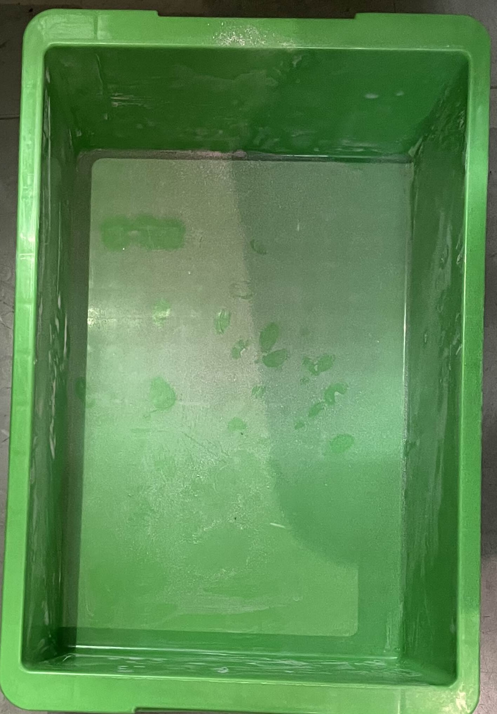
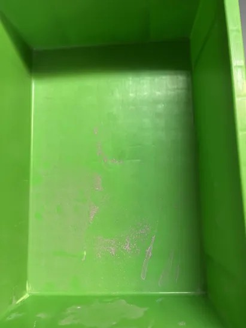
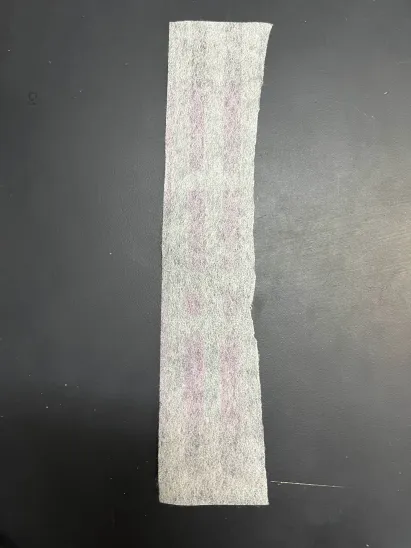
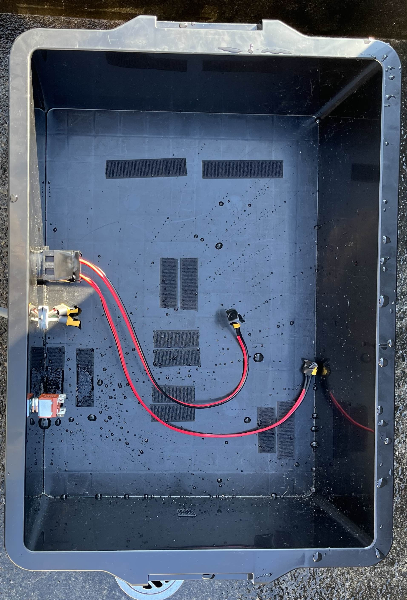

2. 情報収集と分析
課題を解決するために以下の情報や技術について調べた。
- 防水、防塵の等級について
防水や防塵には保護等級という等級があり、IPXと呼ばれている。防水等級は8段階、防塵等級には6段階あり、標準機の基になっているCuGo V3の防水防塵等級は共にIP4X相当である。IP4Xとは、防水等級ではいかなる飛沫によっても有害な影響を受けないこと、防塵等級では直径1㎜のワイヤー等が内部に侵入しないことを指す。CuGo V3では防水防塵が十分にされているといえるだろう。しかし、標準機で使用しているボックスは、穴を開けていたり、エンコーダをつけていたりすることから、防水防塵等級はIP4Xよりも低い等級になっていると考えられる。よって我々はIP4X相当かそれ以上の防水防塵対策を施す必要があると考えた。
- グリスを用いた防水、防塵
クローラの稼働部分にグリスを塗ることで防水防塵効果があるのではないかと考えた。グリスとは、機械が稼働して起きる摩擦や摩耗の発生を抑える役割がある。よって機械の劣化や動作不良を防ぐために使用される。また、グリスは潤滑油とも呼ばれていて、油であるため水をはじくので泥や雨から機体を守る防水防塵効果が期待できる。
- パッキンを使用した防水対策
パッキンは、防水性能を高める為のモノであり、弁当箱の蓋や水道、窓枠など様々なところで使われている。これは、接続部分の隙間を埋めることで、内部に液体の侵入を防ぐ仕組みである。この技術を標準機のボックスの蓋や、開けた穴の部分に使うことができるのではないかと考えた。
- 空気清浄機の空気を循環する仕組み
防塵対策の為、ボックス内部に空気清浄機を設置しようと考えた。空気清浄機は扇風機にエアコンフィルターを取り付けることで簡単に作成することができる。性能については扇風機やフィルターにより差が生じるため、実際に検証する必要がある。
4. 実験・検証
以下の実験を行った
- 箱の中に空気清浄機を設置しその効果を調べる。
- 箱だけの状態で水をかけ、防水性能を確かめる。
実験で使用した道具を以下に示す。
- 標準機
- 空気清浄機
- 箱
- 黒板消し
- 3Dプリンターで作成したパーツ
- 防水テープ
4.1 空気清浄機
サーキュレーターとフィルターを元に空気清浄機を作成した。その性能を確かめるため、実験を行った。実験手順を以下に示す。
- 箱の前で黒板けしをはたく
- 蓋をして10分待つ
- 蓋を開け箱の中の様子を確認する
- これを空気清浄機ありの場合となしの場合で行った
実験の様子を動画１、動画２に示す。
動画１ 実験の様子(空気清浄機無し)
動画２ 実験の様子(空気清浄機有り)
実験の結果を図１に示す。肉眼で確認できる程チョークの粉の量が減っていることが分かる。図２に実験後のフィルターの様子を示す。赤みがかっていて、空気清浄機に効果があることが分かる。

図１ 実験後の箱内部の様子(左：空気清浄機無し 右：有り)

図2 実験後のフィルター
4.2 防水性能の調査および防水対策
まず、標準機のボックスの防水性能を調査した。ボックス内部の基盤等を外し、ボックスのみの状態にした。(図3)
ホースでボックス全体に水をかけ、水がどこから侵入してくるか確認した。その結果を図4に示す。

図3 ボックス内部

図4 全体に水をかけた後のボックス内部
この結果からボックス側面に開けた穴から水が浸入しており、蓋とボックスの間から水が侵入することはないということが分かった。ボックス側面の穴に水を流した様子を動画３に示す。
これより穴を塞ぎ、穴からの水の侵入を防ぐ為に３ｄプリンタ